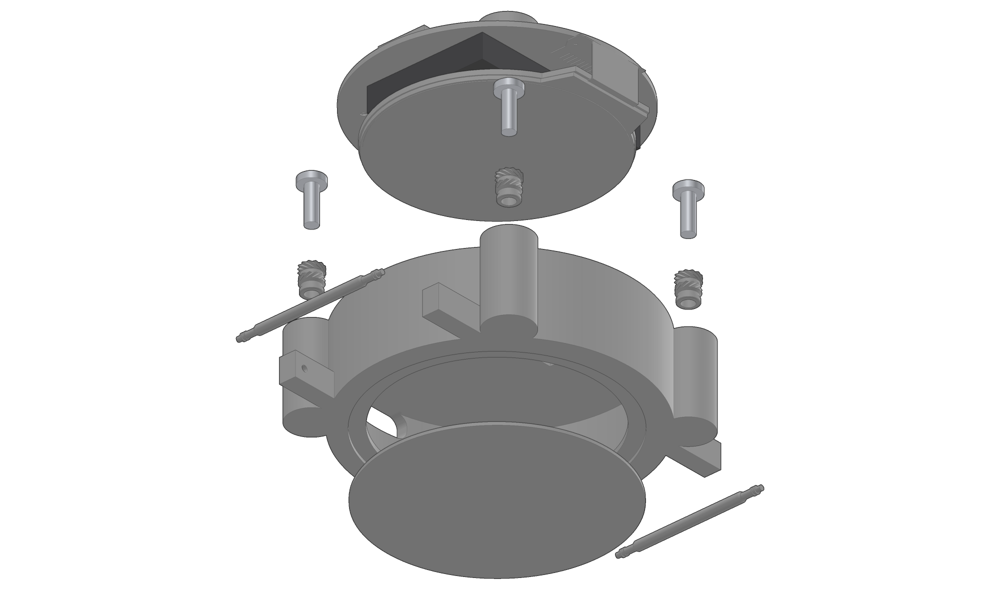

PR0TOBOARD · UHD
Rev A2026-10-24UHD-WATCH-AG
Assembly guide
Wearable Watch
Reference smartwatch: Raytac MDBT50Q-1MV2 (nRF52840, BLE), 1.28-inch round 240 x 240 display (ER-TFT1.28-1, GC9A01), BMI270 IMU, MAX30102 heart rate, DRV2605L with a VG0832012 LRA, MAX17048 fuel gauge, MCP73831 charger from USB-C, 200 mAh LiPo (LP402030), two side buttons, printed PETG case with 22 mm spring-bar lugs.

Exploded along each joint's axis in fastener-stack order (7 mates, 8 hardware parts, battery by placement hint).
Steps
7
mechanical and wiring
Mates
7
from assemble()
Hardware
8
screws, spacers, standoffs, nuts
Parts
71
45 BOM lines
How this guide is made
Steps, parts and hardware come from the UHD model: mates and fastener stacks from assemble(), wiring from wiringChecklist. The coverage table at the end lists where every mate, fastener and wire appears.
A Assumption: the model marks this value as an assumption (assumption trait)D Derived: computed from model values; formula in the provenance appendixUnmarked values are cited from the part's sources (sources.json) or are design values of the model.
PR0TOBOARD · UHDGenerated from the UHD model of
wearable-watch by @protoboardai/ext-docsUHD-WATCH-AG · Rev A · 2026-10-24